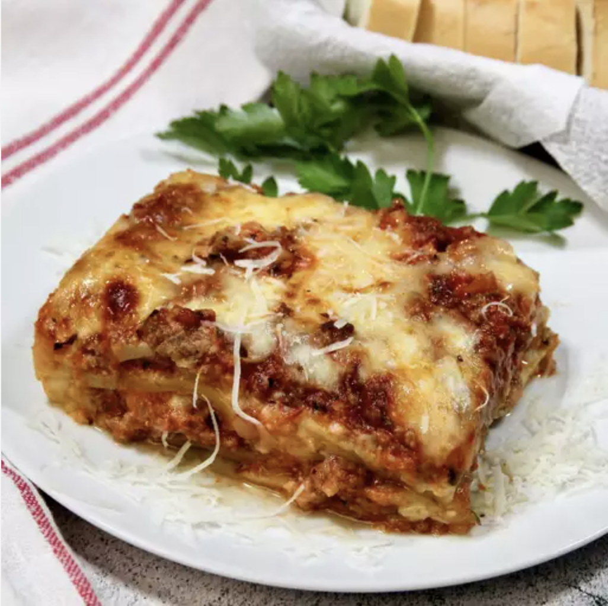

Lasagna

Homemade lasagna isn't as hard to make as it seems. Don't be
intimidated by all the layers of delicious Italian
flavor — try this homemade lasagna recipe today!
In an oven preheated to 375 degrees F, this homemade lasagna should be
perfectly baked in about 50 minutes (30-40 minutes covered, 5-10 minutes uncovered).
"[This is] actually quite easy to make for someone who has never made lasagna before,"
according to jimbob2229. "I used ricotta instead of cottage cheese and added spinach.
Everyone loved it, and I will definitely make it again."
Ingredients:
- ½ pound ground pork
- ½ pound lean ground beef
- ½ cup minced onion
- 1 (28 ounce) can crushed tomatoes
Steps:
- Combine pork and ground beef in a large, deep skillet over medium-high heat;
cook and stir until browned and crumbly, 5 to 7 minutes. Add onion and cook until translucent,
about 5 minutes.
- Stir in crushed tomatoes, tomato sauce, 1 tablespoon fresh parsley, garlic,
basil, salt, oregano, and sugar. Reduce heat to medium-low and simmer,
stirring occasionally, for 30 minutes.
- While the sauce is simmering, bring a large pot of lightly salted water to a boil.
Cook lasagna noodles in the boiling water, stirring occasionally, until tender yet firm to the bite,
8 to 10 minutes. Drain and set aside.